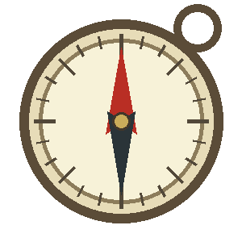
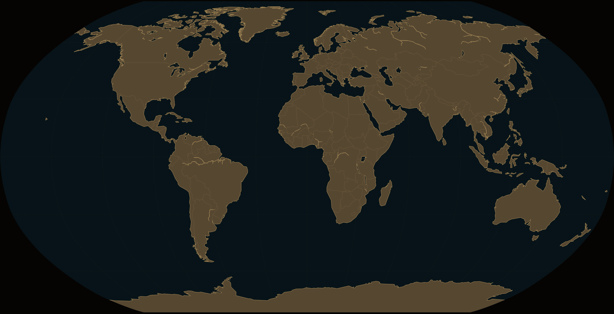

OBJEKT 001
Det tapte kompasset
Lokalisert i den forseglede kisten. Ikke fjernet ennå.
Professor Aurora Vale og det tapte kompasset
«Historien belønner tålmodighet. Se én gang til.»
Vi tar det rolig. Gå mot høyre og se etter noe uvanlig.
Innskriften viser veien
Utrolig... veggene er dekket av hieroglyfer.
Mykene får vente. Først må funnet dokumenteres ordentlig.

Kompasset fra gravkammeret peker videre mot Hellas. Mykene er nå tilgjengelig som neste reisemål.